Artefacts
Forty-eight companion portraits for how math is stored and executed. Epoch cues mark the shelf they belong on.

Tally stick
一 MARK
Clay tokens
一 MARK
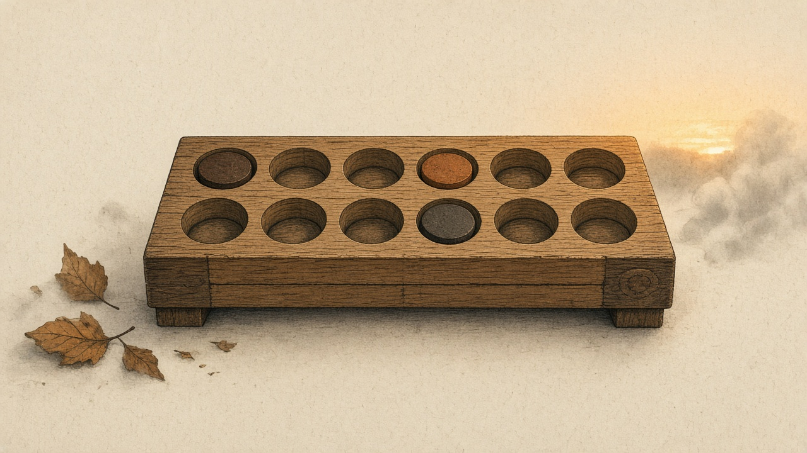
Ten-frame
一 MARK

Pan balance
一 MARK

Coin strip
一 MARK

Ruler
一 MARK

Data marks
一 MARK

Number line
一 MARK

Fraction bar
二 WRITE

Shape tiles
二 WRITE
Compass & straightedge
二 WRITE
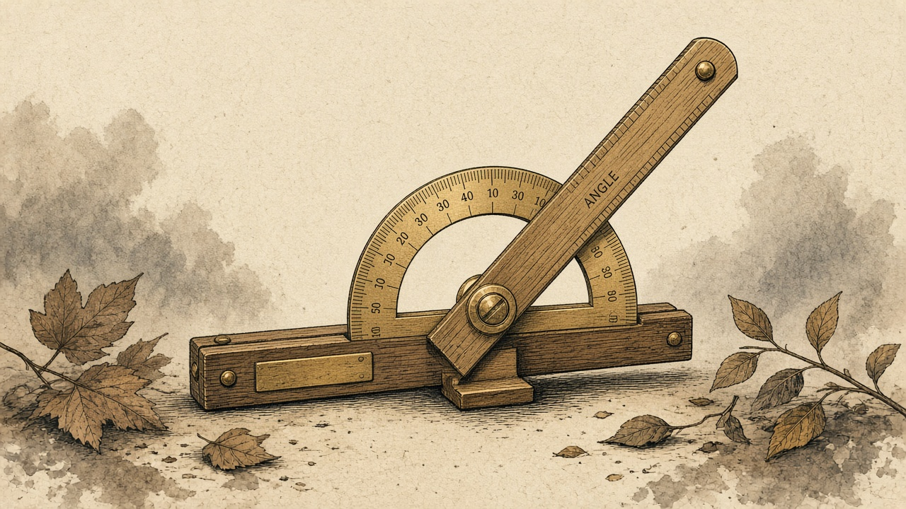
Protractor
二 WRITE

Multiplication strip
三 ALGORITHM
Counting rods
三 ALGORITHM

Abacus
三 ALGORITHM

Grid
三 ALGORITHM

Clock
三 ALGORITHM

Manuscript table
三 ALGORITHM
Astrolabe
三 ALGORITHM
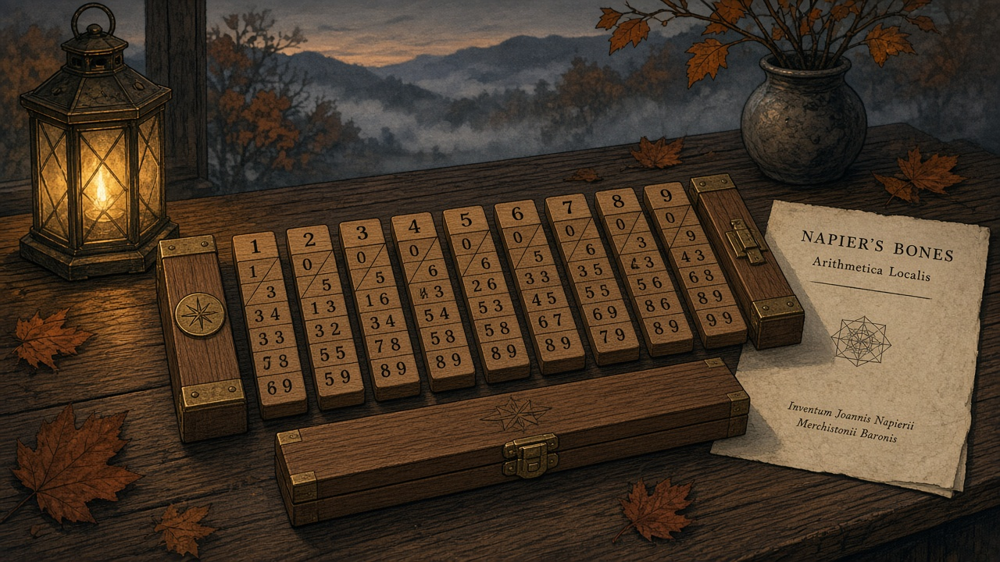
Napier's rods
三/四
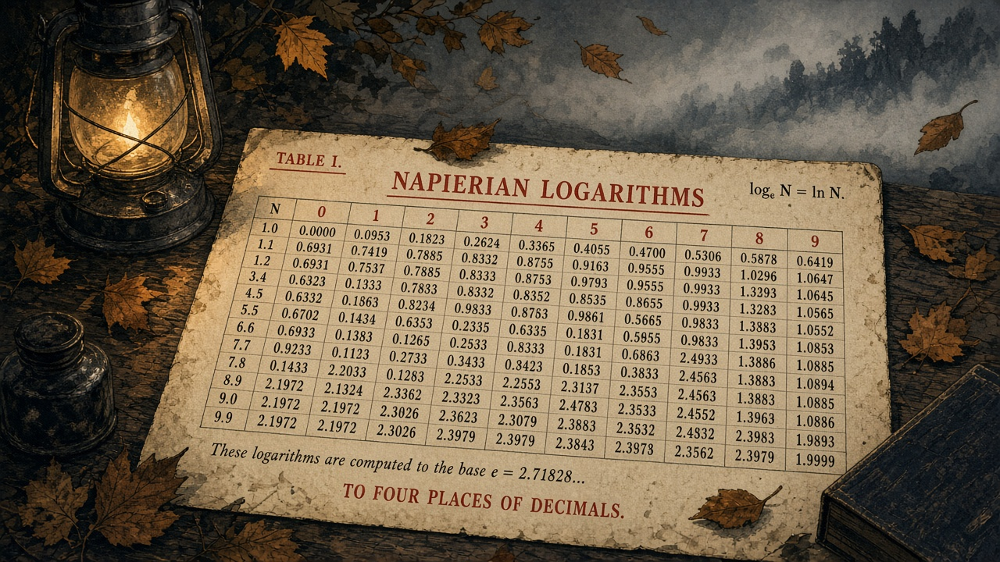
Logarithm table
四 PRINT
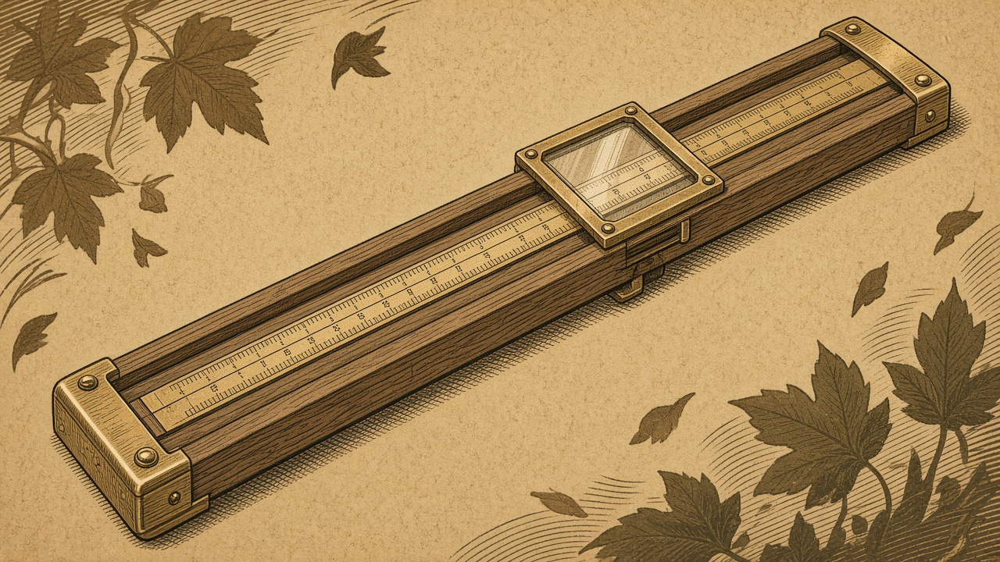
Slide rule
五 MECHANIZE
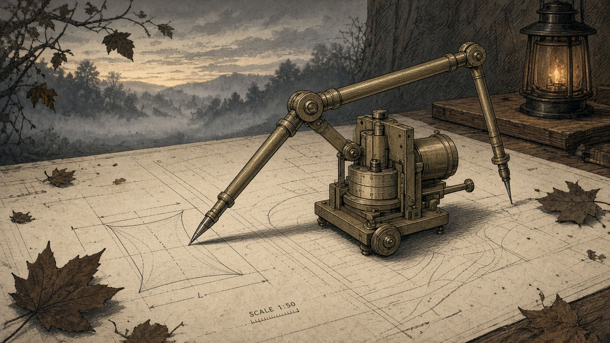
Planimeter
五 MECHANIZE
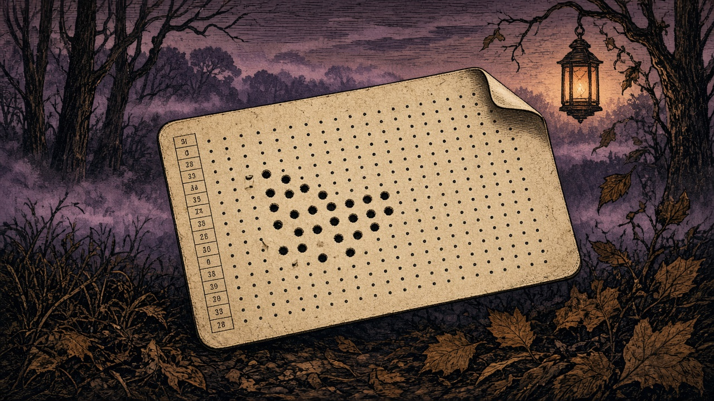
Punch card
六 COMPUTE

Formula card
二 WRITE
Growth vial
五 MECHANIZE

Series chain
一 MARK
Chance bowl
一 MARK

Slope glass
五 MECHANIZE
Area sweep
五 MECHANIZE
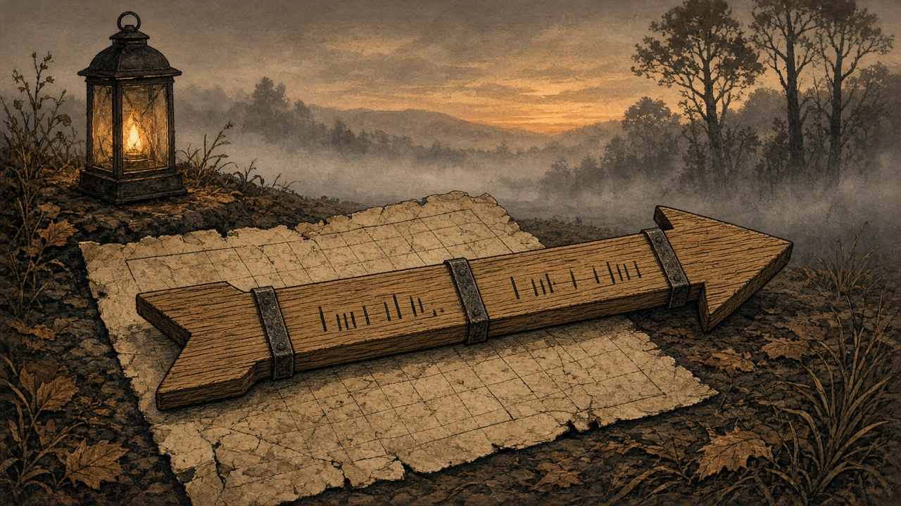
Vector arrow
五 MECHANIZE

Matrix press
六 COMPUTE

Model bench
二 WRITE

Proof seal
二 WRITE

Error bead
一 MARK
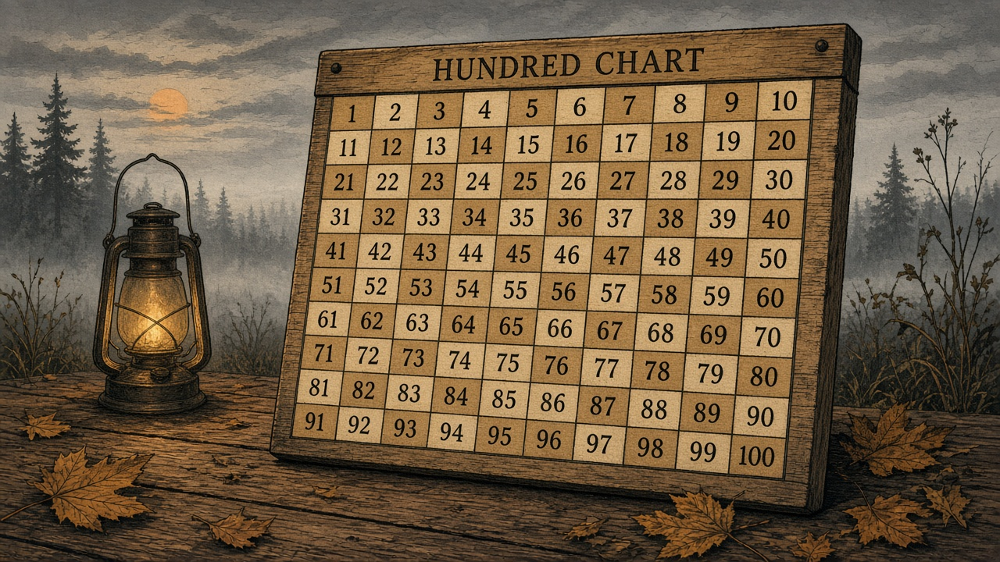
Hundred chart
二 WRITE

Letter balance
二 WRITE
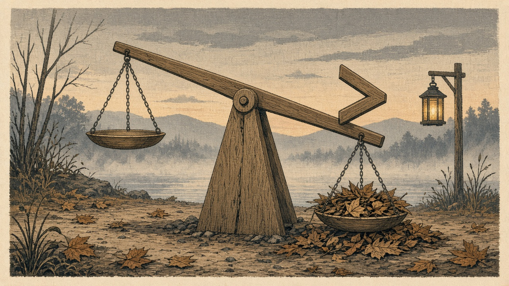
Inequality beam
三 ALGORITHM
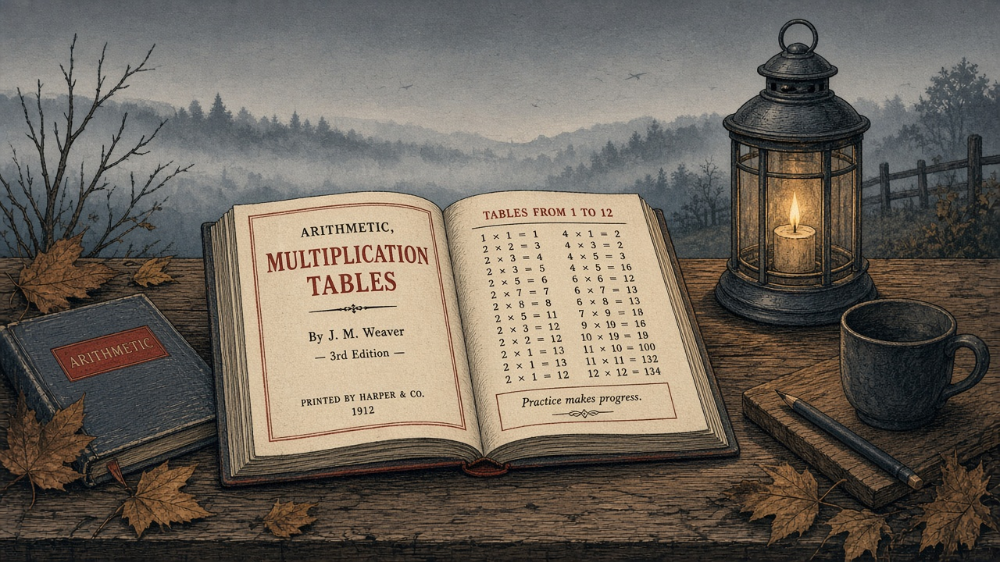
Printed arithmetic
四 PRINT
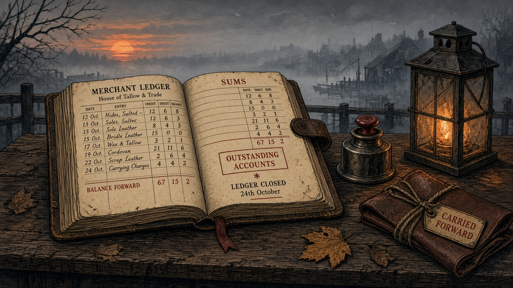
Merchant ledger
四 PRINT
Telescope
五 MECHANIZE
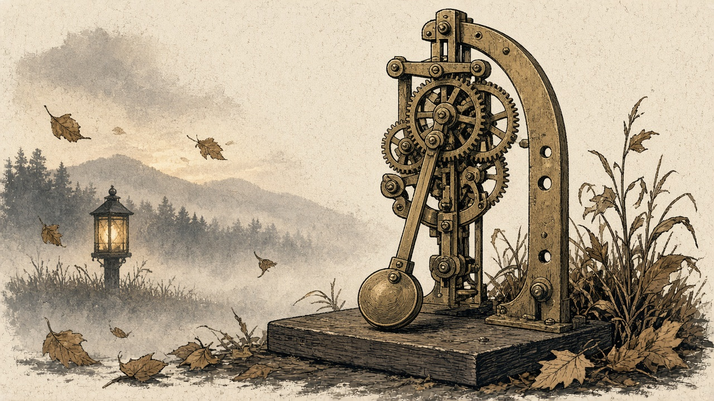
Pendulum
五 MECHANIZE
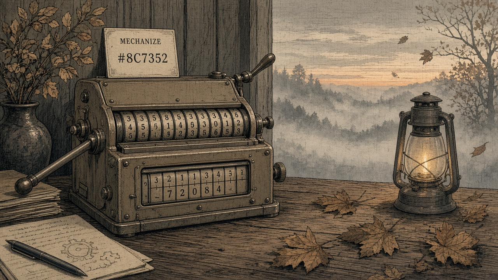
Mechanical calculator
五 MECHANIZE

Graph paper
四 PRINT

Area model
二 WRITE
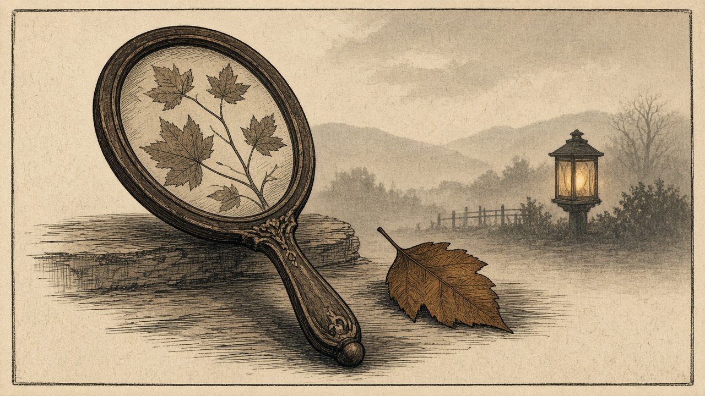
Mirror of symmetry
二 WRITE

Outcome tree
三 ALGORITHM
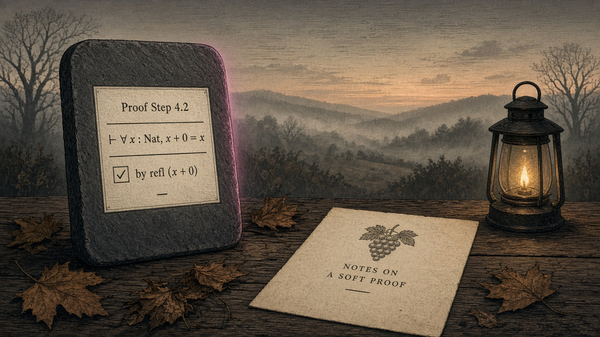
Proof assistant
七 INTELLIGENCE
Batch lineages
Open a path for shadowy stage silhouettes—level-ups fogged until you hover.
Tally stick
One mark for one thing—counting’s first technology.
Ten-frame
A small stage for cardinality and regrouping toward ten.
Pan balance
Joining and taking away until two pans agree.
Coin strip
Position and denomination—place value you can hold.
Number line
Order and distance drawn as a walkable landscape.
Series chain
Notice the rule, predict the next link.
Shape tiles
Sort and name forms—classification grown precise.
Grid
Rows and columns turn location into an address.
Ruler
Shared units for trade, building, and measure.